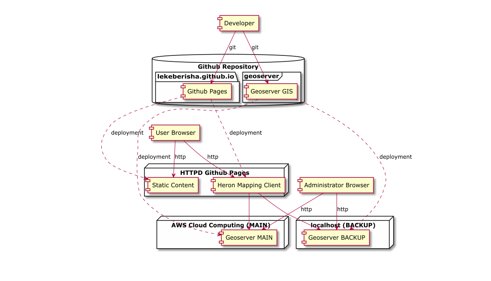

Web mapping është teknikë e shfrytëzimit të hartave që merren nga një sistem informacioni për të dhënat hapësinore dhe gjeografike (GIS). GIS është më shumë se kuptimi i saj i drejtpërdrejtë dhe shihet nga pikëpamja e shërbimit dhe konsumatorit. Hartat në dispozicion në World Wide Web shërbejnë për qëllime të ndryshme në varësi të llojit të përdoruesit që shërbehet. GIS njihet edhe si hartim në internet.
Për projektin tim, unë përdor Git si sisteme të kontrollit të versionit.
Projekti është i ngarkuar ne Github.
| Repository / Depot | Përshkrim | Dukshmëria |
|---|---|---|
| lekeberisha.github.io | Webharto | Publik |
Përmbajtja e failave (files) statike është paraqitur përmes Github Pages. Këtu përfshihen Ushtrimet (2, 3 dhe 4) si dhe Webharto GUI (Heron). Faqja është në dispozicion nën url https://lekeberisha.github.io/.
Ushtrimet 2, 3 dhe 4 përdorin teknologji të zakonshme në internet si HTML, CSS dhe JavaScript.
Heron është një aplikacion i bazuar në web për shfaqjen e hartave. Ajo bazohet në GeoExt JavaScript Toolkit.
Shtresat bazore jane marrë nga Gjeoportali Shtetëror (RKS). Shtresa të tjera ngarkohen nga gjeosverri (Geoserver). Gjeroserveri është i konfiguruar në localhost (Backup).
Unë kam përdorë një sistem i cili është geoserver (open source) për të siguruar shërbimet per shakarimin e gjeodatatave. Konfigurimi i shtresave të ndryshme korrespondon me detyrën. Geoserveri është instaluar në sistemin local(localhost).
Për krijimin e shtresave individuale (shapefiles) unë përdori aplikacionin ArcMap.
git clone https://github.com/lekeberisha/lekeberisha.github.io.git# Kujdes: është testetuar vetëm ne sistem Linux
cd lekeberisha.github.io.git/dev
./make.sh# git add ...
# git commit ...
git pushcd /geoserver/geoserver-2.16.1/bin
startup.batcd /geoserver/geoserver-2.16.1/bin
shutdown.bat# git add ...
# git commit ...
git push